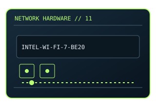

[ MODEL-SPECIFIC NETWORK HARDWARE ]
Intel Wi-Fi 7 BE200NGW
M.2 2230 E-key Wi-Fi 7 module with Bluetooth; module identification should include its label/suffix. This entry uses the labeled manufacturer model identifier and cites primary product/support documentation.

MODEL IDENTIFICATION: Match the complete model/part number and hardware revision on the item label to manufacturer documentation. Do not apply this entry to near-name variants.
Exact specifications and compatibility
| Cataloged model | Intel Wi-Fi 7 BE200NGW |
|---|---|
| Dedicated subcategory | Wireless adapters |
| Bus / host interface | M.2 2230 E-key; Wi-Fi uses PCIe and Bluetooth uses USB signaling. |
| Ports / physical interfaces | Internal module; two antenna connections are used by supported 2×2 designs. |
| PHY, radio or protocol | Wi-Fi 7 (802.11be), 2×2; 2.4/5/6 GHz where regulatory domain permits; Bluetooth 5.4 capability is firmware/OS dependent. |
| PoE | No PoE input or PoE output is documented for this product. |
| Link-rate vs throughput | Advertised PHY maximums require matching channel width, AP and region; actual Wi-Fi payload is lower and environment-dependent. Link rates are nominal negotiated/PHY specifications, not measured application throughput; no measured specimen result is claimed. |
| Firmware / driver support | Intel wireless driver/software and module firmware; supported OS versions are listed on Intel support pages. |
| Compatibility checks | Confirm E-key socket exposes PCIe plus USB, antenna leads, BIOS whitelist and local 6GHz rules. |
Model-specific notes
BE200 is not interchangeable with CNVio2-only Intel modules in every host.
Primary manufacturer sources
- Intel Wi-Fi 7 BE200 product specificationsManufacturer product specification or documentation for the exact model/family.
- Manufacturer support and compatibility resourcesFirmware, driver, compatibility, revision or support details; applicability may depend on the exact hardware revision and region.
Vendor maximum rates are not test results. Confirm regional variants, hardware revision and current support status with the manufacturer.